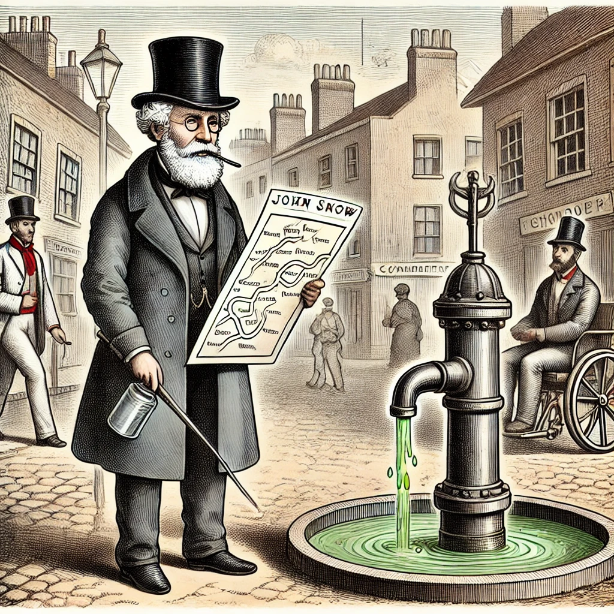

La epidemiología es la disciplina que estudia la distribución y determinantes de las enfermedades en las poblaciones. Sus orígenes se remontan a la antigua Grecia, pero fue en el siglo XIX cuando John Snow demostró su utilidad al identificar el agua contaminada como la causa del brote de cólera en Londres.
El promedio (también conocido como media aritmética) es un valor que representa el centro de un conjunto de números. Se obtiene sumando todos los valores y dividiéndolos por la cantidad total de elementos en el conjunto.
Puedes aprender más sobre cómo calcular el promedio con un tutorial interactivo.